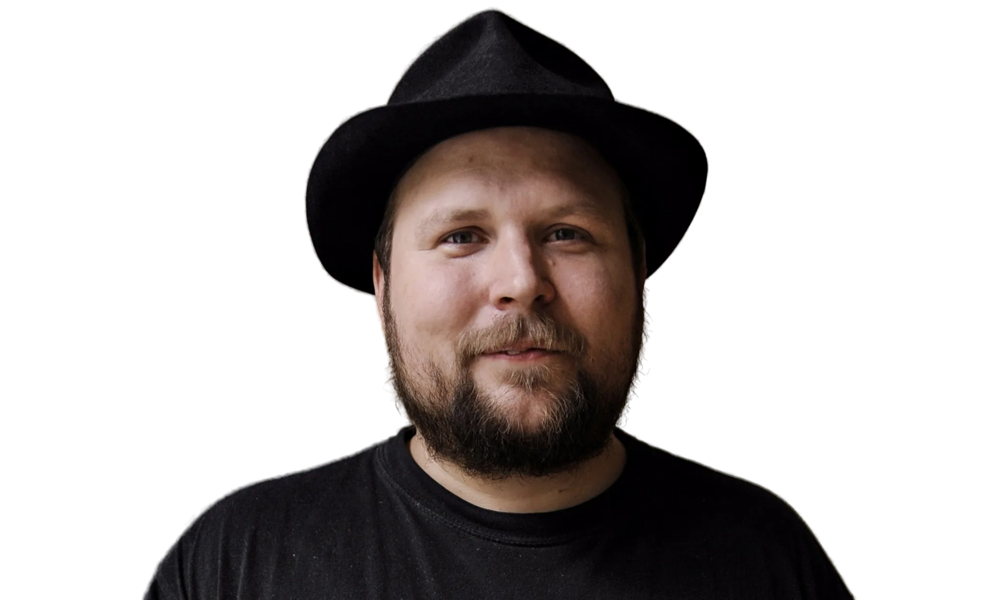
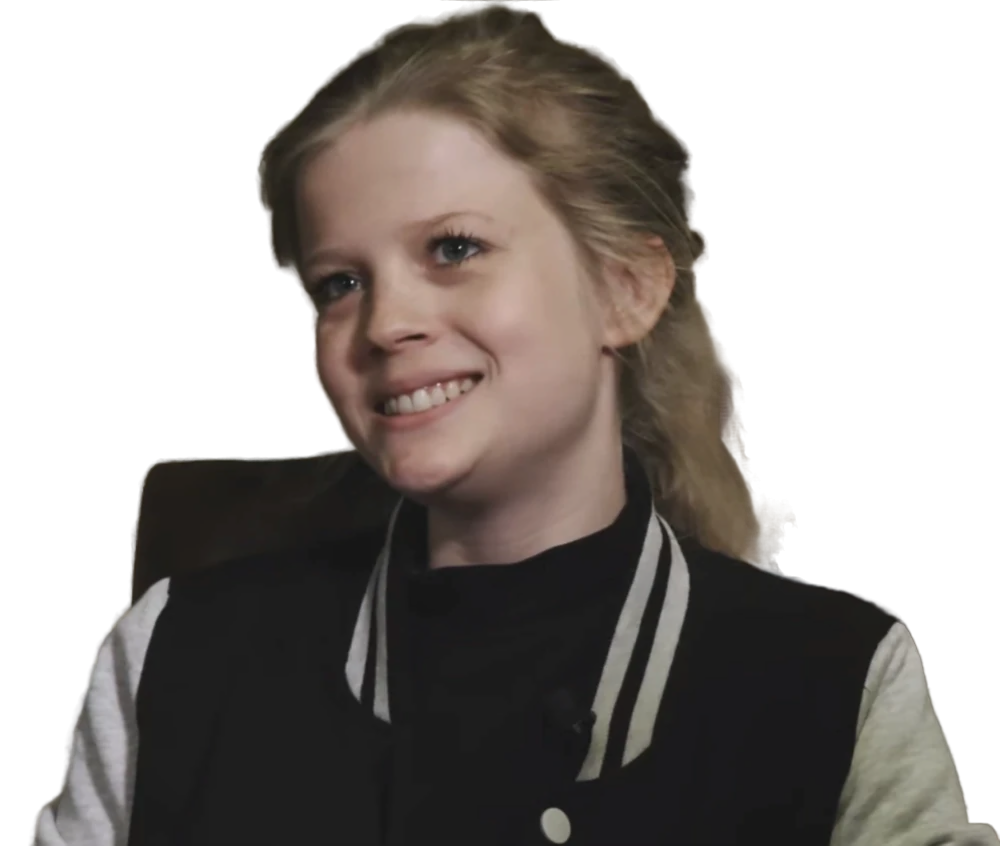

Маркус "Notch" Перссон
Создатель Minecraft
Шведский программист и геймдизайнер, создавший первую версию Minecraft в 2009 году.
Основные вклады:
- Создание оригинальной концепции игры
- Разработка первых версий (Classic, Indev, Infdev)
- Основные механики геймплея
Йенс "Jeb" Бергенстен
Главный разработчик
Присоединился к Mojang в 2010 году, возглавил разработку после ухода Notch.
Основные вклады:
- Разработка The Nether Update (1.16)
- Создание новых мобов (Пчелы, Лисы)
- Система деревень и рейдов

Агнес Ларссон
Геймдизайнер
Работает в Mojang с 2017 года, отвечает за новые функции и контент.
Основные вклады:
- Разработка системы археологии
- Создание новых структур (Древние города)
- Концепция Sculk-семейства блоков
История разработки
Minecraft был создан Маркусом Перссоном и впервые выпущен в 2009 году. С тех пор игра прошла через множество этапов развития:
- 2009-2011 - Ранние версии (Classic, Indev, Infdev, Alpha, Beta)
- 2011 - Официальный релиз (версия 1.0)
- 2014 - Приобретение Microsoft
- 2017 - Обновление "World of Color" (1.12)
- 2020 - Обновление Nether (1.16)
- 2023 - Обновление Trails & Tales (1.20)